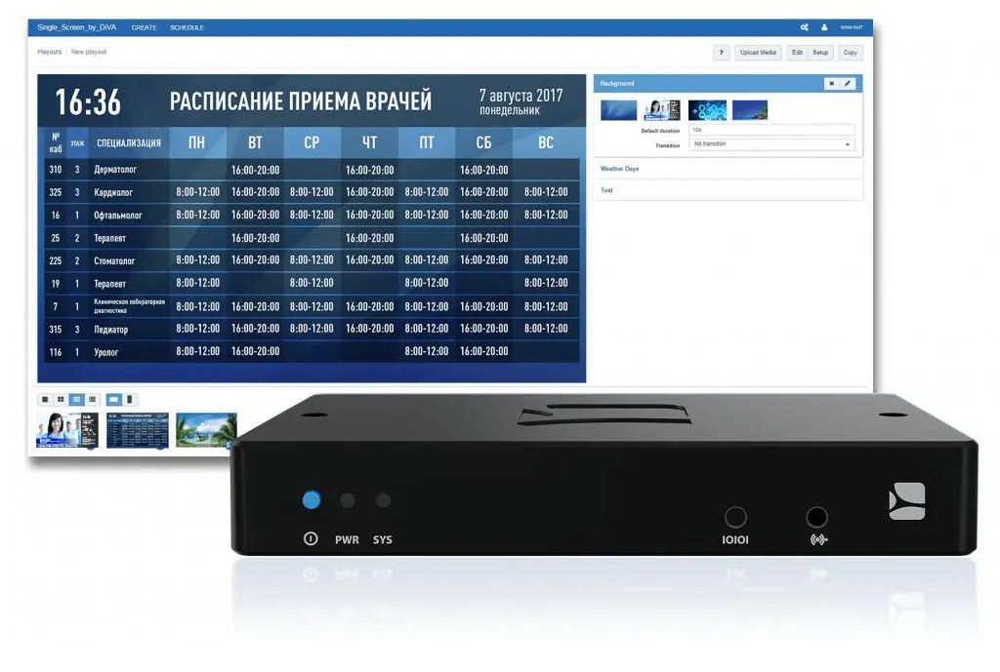

Задачи Digital Signage
Информационная Донесение публичной или внутрикорпоративной информации до аудитории. Например, расписание приема у врача или актуальная информация о технологическом процессе на производстве. Рекламная Анонсирование и продвижение продуктов, услуг, а также информация об актуальных акциях и горячих ценовых предложениях. Цель в данном случае - увеличение продаж «прямо сейчас». Имиджевая Системы Digital Signage могут использоваться как способ формирования имиджа бренда в сознании потребителя. Иногда даже сам факт использования систем Digital Signage может указывать на высокий статус рекламируемого товара.
Состав системы Digital Signage

Когда говорят о Digital Signage, то имеют в виду целый комплекс компонентов: Дисплеи Воспроизводят мультимедийный контент аудитории. В качестве дисплея могут использоваться самые разные устройства, от простого ЖК-экрана до громадной светодиодной панели. Сколько и каких дисплеев установить, зависит от проекта и масштаба помещения. Это может быть одноэкранная автоматизированная система для показа новостей, доска меню, интерактивные карты с указателями, видеостены. Для небольших розничных магазинов достаточно двух-трех экранов, а для торговых центров понадобится больше дисплеев.
Преимущества Digital Signage
Быстрая замена Поменяйте рекламу во всей сети в любое время за пару кликов. Динамический контент Такой материал эффективнее привлекает клиентов, чем стандартные рекламные носители. Он заставляет людей остановиться и узнать больше о продукте. Интерактив Перед вами открываются неограниченные возможности для взаимодействия с аудиторией: от забавных фотографий с продуктом до «движущихся» изображений, которые активируются при приближении посетителя. Масштабирование Начните с нескольких дисплеев, необходимых прямо сейчас. Когда откроете новый филиал, подключить новые экраны к системе можно за пару минут.
Сферы применения Digital Signage
Системы Digital Signage устанавливают как в помещениях (торговые центры, магазины, банки, фитнес-центры, образовательные учреждения и прочие), так и на открытых пространствах (стадионы, вокзалы, аэропорты и прочие). Технология подходит для крупных игроков рынка и небольших компаний, которые ищут действенные методы коммуникации с аудиторией.